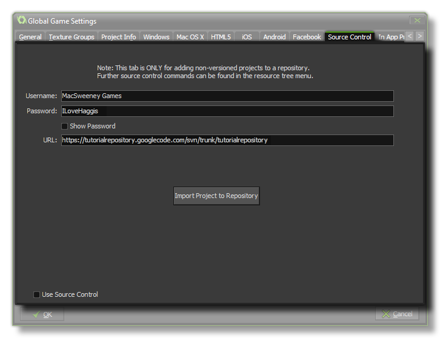

 If you have been
working on a project without having it configured for source
control, it's still not too late and you can actually version it
too and have it protected the same as any new file. To do this, you
have to go to the Global Game Settings and select the Source
Control tab, then fill in the relevant details:
- Username - This is the username assigned to you by whoever administers the source control system (if you have noone, or don't know, leave it blank).
- Password - This is the password assigned to you by whoever administers the source control system (if you have noone, or don't know, leave it blank).
- URL - This should point GameMaker: Studio to the location where you created your repository.
Finally, click on the "import Project to repository" button to
version your current project and add it to the source control
repository. For more information please see the section on Source Control.
NOTE: This only needs done once for any project
and you should never need to do this again.
NOTE: This functionality is limited to the Professional
Version of GameMaker: Studio.